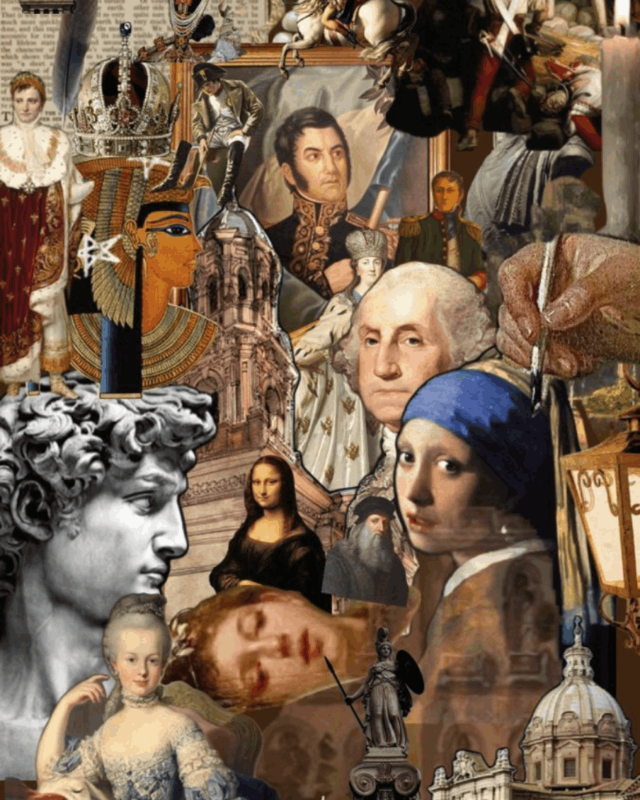

Offline Website MakerThis story shows how designers bring artistic thinking to baristas, elevating their work into a broader life aesthetic
Human-Centered
Designers create meaningful solutions through user understanding.
Data and Iteration
Design evolves by testing and refining with data.
Compliance and Process
Design meets standards through structured workflows.
以人为本
设计师通过理解用户创造有意义的解决方案。
数据与迭代
设计通过测试与数据优化不断进化。
规范与流程
设计通过结构化流程确保符合标准。
People-Oriented
Baristas create enjoyable experiences by serving customers’ unique tastes and needs.
Data and Iteration
They refine techniques through observation and feedback to perfect each cup.
Compliance and Procedures
Baristas follow strict standards to ensure consistent, high-quality coffee.
以人为本
咖啡师通过满足顾客独特的口味和需求，创造愉悦的体验。
数据与迭代
他们通过观察和反馈不断的改进技术，使每一杯咖啡更加完美。
合规与流程
咖啡师严格遵守标准，确保咖啡始终统一、品质卓越。

Drawing Inspiration from Macro History
Designers draw from history and culture beyond modern trends.
Reconstructing and Recreating Historical Elements
They revive the past by revisiting historical elements.
Crafting with Time and Tools
Designers build with patience, skill, and timeless foundations.
从宏观历史中汲取灵感
设计师们从历史文化中提取灵感，超越现代潮流。
重构与重现历史元素
他们通过重新回顾历史元素，重现过去。
用时间和工具打造
设计师凭借耐心、技巧和永恒的基础进行构建。
Crafting History Through Skill
Barista history is shaped by practice and experience, not theory.
The Harmony of Time and Technique
Baristas perfect their craft through time and experience.
Creating Art from Everyday Life
Baristas turn daily routines into living art.
以技艺塑造历史
咖啡师的历史源于实践与经验，而非理论。
时间与技法的融合
咖啡师通过时间与经验不断完善他们的技艺。
从日常中创造艺术
咖啡师将日常生活变成生活艺术。
Problem
Disorganized data made it hard to extract key insights.
Solution
The designer organized and analyzed materials using charts and keywords to find patterns.
Result
Analysis efficiency increased by 60%, and insight time reduced by 40%.
问题
资料杂乱，难以提炼核心线索与洞察。
解决方法
设计师分类整理资料，用图表与关键词分析找出规律。
结果
分析效率提升 60%，洞察时间缩短 40%。
Problem
Unstable machine temperature caused inconsistent coffee quality during peak hours.
Solution
The barista adjusted settings, recalibrated the machine, and set up daily checks.
Result
Errors dropped 75%, satisfaction rose 40%, and efficiency improved 25%.
问题
高峰时段机器温度不稳定，导致咖啡品质不一致。
解决方法
咖啡师调整参数、重新校准机器，并建立每日检测流程。
结果
失误率降低 75%，顾客满意度提升 40%，工作效率提高 25%。
Offline Website Maker